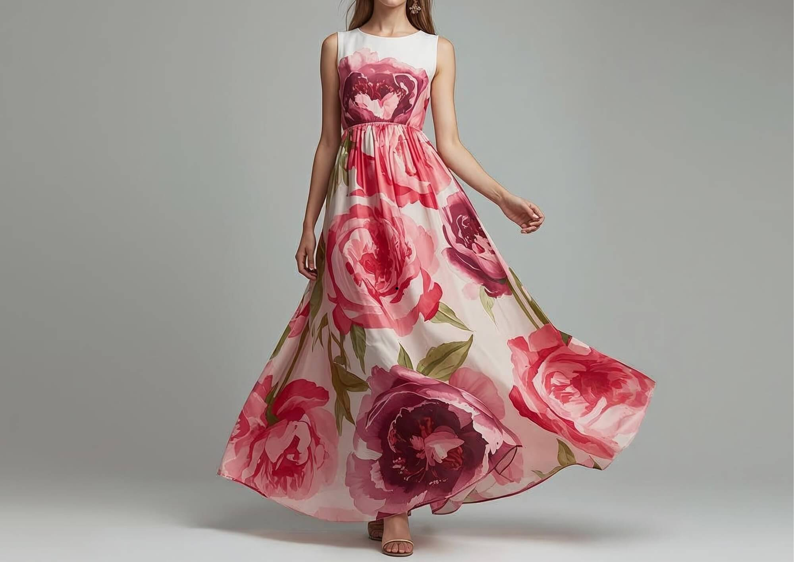

Rose Serenity

Rose Serenity is a graceful evening design that combines feminine elegance with modern fashion aesthetics.
Design Inspiration
Inspired by the softness and beauty of roses, this design focuses on delicate details, graceful movement, and feminine sophistication.
Product Details
- Collection: Evening Wear Collection
- Color: Rose Pink
- Fabric: Chiffon and Silk
- Style: Feminine and Elegant
- Occasion: Parties and Formal Events
- Design: Graceful Evening Wear
Customization Options
- Color customization
- Fabric selection
- Design modifications
- Size and fitting adjustments
Interested in This Design?
Contact AURELIA to create a personalized Rose Serenity design.
Contact the Designer